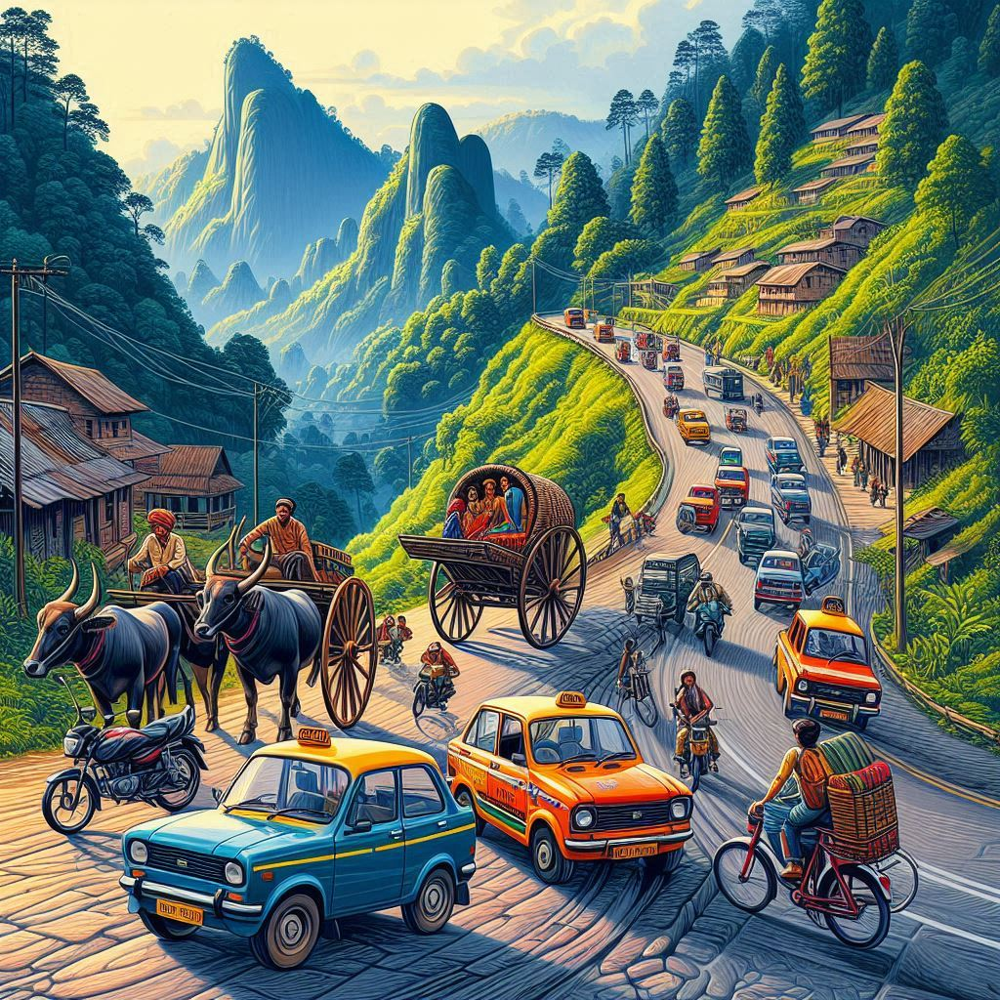
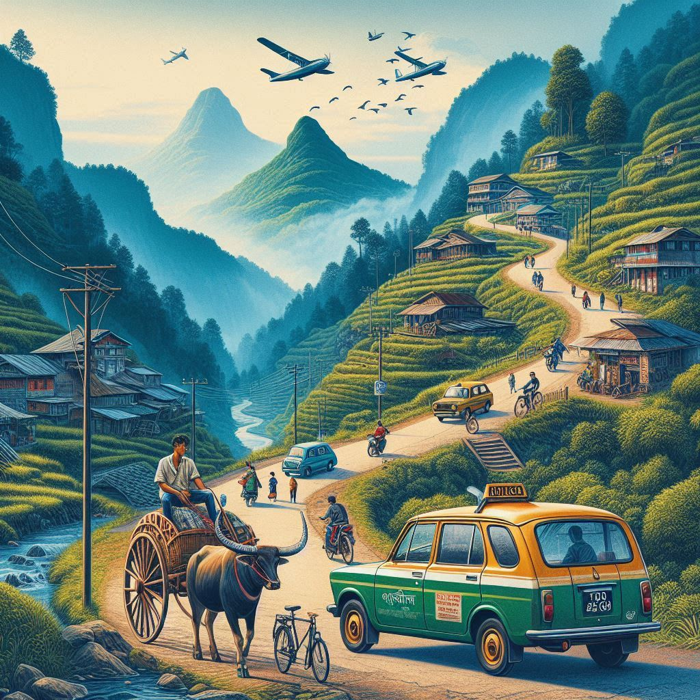

Transportation in Meghalaya
Meghalaya, with its hilly terrain and diverse geography, has a mix of transportation modes for getting
around the state. The transportation system is developing to meet the needs of the people while showcasing
the state's scenic beauty. Here are the primary modes of transport in Meghalaya:
1. Road Transport
National Highways and State Roads
- Meghalaya has a fairly developed road network connecting major cities and towns within the state.
The main highways, such as National Highway 6 and National Highway 40, connect the state with
neighboring states like Assam, Bengal, and more distant parts of India.
- The state also has well-maintained state roads that connect the hilly towns and remote villages.
Buses
- Private Buses: Various private bus operators run services between Shillong, the
capital, and other towns like Tura, Jowai, and Nongstoin. These buses serve as the most common mode
of transport for intercity travel within Meghalaya.
- Government Buses: The Meghalaya Transport Corporation (MTC) also runs buses, which
are a more affordable but less frequent option. MTC buses connect major urban centers within
Meghalaya as well as neighboring states.
Taxis and Shared Vehicles
- Taxis: Private taxis are commonly used for intercity and local travel. They can be
hired for both short and long distances.
- Shared Taxis: For shorter trips, shared taxis (locally known as "Sumos") are
commonly used. These taxis are usually shared by multiple passengers and can be more economical.
2. Rail Transport
- Meghalaya does not have its own railway network, but the nearest major railway stations are located
in Guwahati (Assam), which is around 100-120 kilometers from Shillong. From there,
travelers can take a taxi or bus to reach Meghalaya.
- Nongstoin in West Khasi Hills is expected to get a railway station soon as part of
ongoing infrastructure development plans.
3. Air Transport
- Shillong Airport (Umroi) is the main airport in Meghalaya, located about 30 km from
Shillong, the capital city. It has limited flight services, primarily connecting to Guwahati and
Kolkata. However, the airport's capacity is being expanded to handle more flights.
- Guwahati’s Lokpriya Gopinath Bordoloi International Airport is the nearest major
airport for travelers coming from outside Meghalaya, offering flights to major cities across India.
From there, travelers can travel by road to Meghalaya.


4. Water Transport
- Water transport is not commonly used for travel within Meghalaya as it is a hilly state with limited
navigable rivers. However, the state is home to some rivers like the Brahmaputra
and Umiam, which have potential for future development in terms of tourism.
5. Helicopter Services
- Meghalaya has recently started offering helicopter services between Shillong and
Guwahati, primarily for tourism purposes, offering a scenic view of the hills and valleys.
6. Future Developments
- The Shillong Bypass project and expansion of National Highways are expected to
enhance road connectivity and make traveling through the state smoother.
- The Meghalaya government has also been exploring electric buses and cable
cars for promoting eco-friendly transport solutions in the future.
7. Challenges
- Due to the hilly terrain, some rural areas are not well connected by roads, which makes
transportation difficult during the monsoon season, when landslides are common.
- The road infrastructure in the state, although improving, still needs to be upgraded in certain
areas to handle higher volumes of traffic.
Conclusion
While road transport remains the dominant mode of transportation in Meghalaya, the state's transport
system is evolving with improvements in infrastructure and new modes of transport, making it more
accessible for locals and tourists alike.